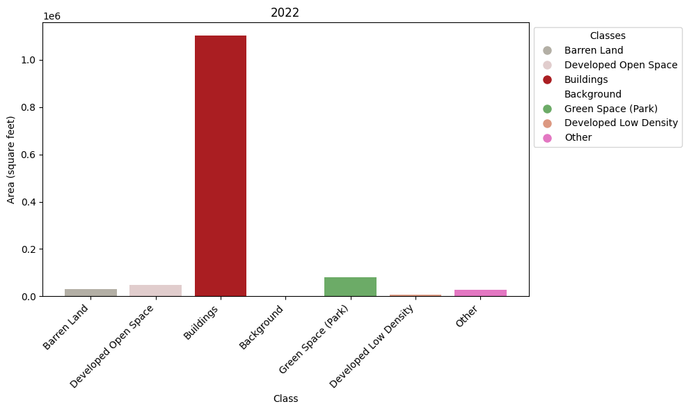
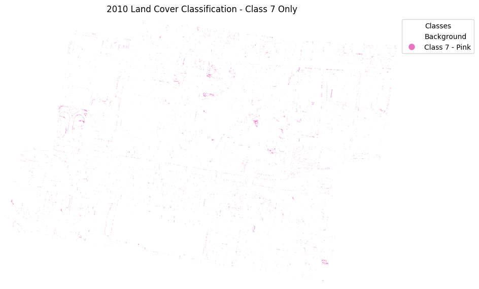
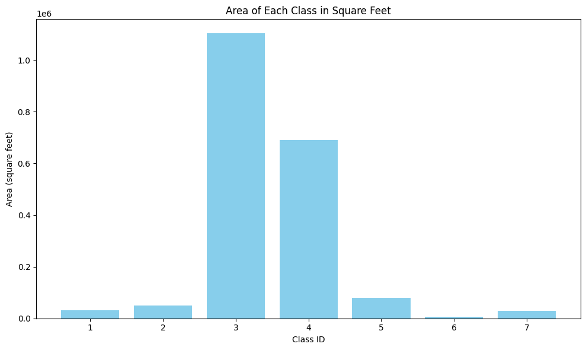
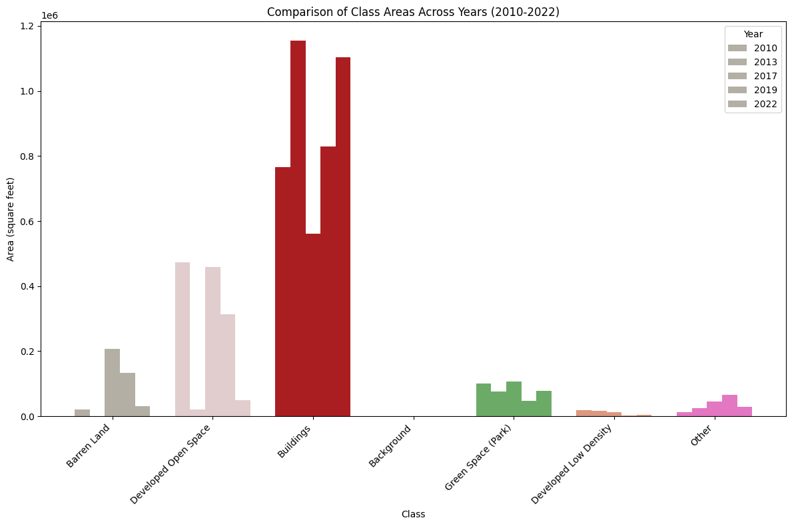

from matplotlib import pyplot as pltLand Cover Change Analysis
root = 'C:/Users/19397/Documents/GitHub/MUSA_6950/NationalParks_AI'
mosaic_path = 'C:/Users/19397/Documents/GitHub/MUSA_6950/ai-urban-sustainability/lab6-machine-learning/mosacied-lu-chicago.tif'
# Open the raster file
with rasterio.open(mosaic_path) as src:
classified_img = src.read(1) # Read the first (only) band
# Plot the classified raster
plt.figure(figsize=(10, 8))
plt.imshow(classified_img, cmap="tab10") # 'tab10' provides distinct colors
plt.colorbar(label="Land Cover Class") # Optional colorbar
plt.title("Classified Land Cover Map, A Part of Chicago")
plt.axis("off") # Hide axis ticks
plt.show()import matplotlib.pyplot as plt
import numpy as np
import rasterio
import matplotlib.colors as mcolors
# Path to the classified raster file
mosaic_path = 'C:/Users/19397/Documents/GitHub/MUSA_6950/ai-urban-sustainability/lab6-machine-learning/CT-classified/classified_mask2022-naip.tif'
# Open the raster file to access the data and metadata
with rasterio.open(mosaic_path) as src:
classified_img = src.read(1) # Read the first (only) band
nodata_value = src.nodata # Check the NoData value, if exists
pixel_size = src.res # This gives (pixel_width, pixel_height) in feet
pixel_area = pixel_size[0] * pixel_size[1] # Pixel area in square feet
# Handle NoData values (e.g., replace them with a specific value if needed)
if nodata_value is not None:
classified_img[classified_img == nodata_value] = 0 # Replace NoData with 0 or any appropriate value
# Get unique classes and their counts
unique_classes, counts = np.unique(classified_img, return_counts=True)
# Calculate the area for each class (in square feet)
class_areas_ft2 = counts * pixel_area # Area = pixel count * pixel area (square feet)
# Define new colors for the bars
cmap = mcolors.ListedColormap([
'#B3AFA5', # Class 1 - Barren Land
'#E1CDCD', # Class 2 - Developed Open Space
'#AA1E22', # Class 3 - Buildings
'#FFFFFF', # Class 4 - Background
'#6CAB67', # Class 5 - Green Space (Park)
'#DC9881', # Class 6 - Developed Low Density
'#e377c2' # Class 7 - Other
])
# Create the legend labels corresponding to the class values
legend_labels = [
'Barren Land',
'Developed Open Space',
'Buildings',
'Background',
'Green Space (Park)',
'Developed Low Density',
'Other'
]
# Plotting the bar plot for class areas
plt.figure(figsize=(10, 6))
# Bar colors corresponding to the classes
bar_colors = cmap(range(len(unique_classes)))
# Plot the bars
plt.bar(unique_classes, class_areas_ft2, color=bar_colors)
# Add title and axis labels
plt.xlabel('Class')
plt.ylabel('Area (square feet)')
plt.title('2022')
# Set x-axis labels to the class names and rotate them by 45 degrees
plt.xticks(unique_classes, legend_labels, rotation=45, ha='right')
# Create a custom legend for the classes
handles = [plt.Line2D([0], [0], marker='o', color='w', markerfacecolor=cmap(i), markersize=10) for i in range(7)]
plt.legend(handles, legend_labels, title="Classes", loc="upper left", bbox_to_anchor=(1, 1))
plt.tight_layout()
plt.show()
import rasterio
from matplotlib import pyplot as plt
import numpy as np
import matplotlib.colors as mcolors
mosaic_path = 'C:/Users/19397/Documents/GitHub/MUSA_6950/ai-urban-sustainability/lab6-machine-learning/CT-classified/classified_mask2010-naip.tif'
# Open the raster file
with rasterio.open(mosaic_path) as src:
classified_img = src.read(1) # Read the first (only) band
nodata_value = src.nodata # Check the NoData value, if exists
# Check unique values in the raster (to understand classification)
print(f"Unique values in the classified raster: {np.unique(classified_img)}")
print(f"NoData value: {nodata_value}")
# Handle NoData values (e.g., replace them with a specific value if needed)
if nodata_value is not None:
classified_img[classified_img == nodata_value] = 0 # Replace NoData with 0 or any appropriate value
# Set all values except Class 7 to 0 (background value)
classified_img[classified_img != 7] = 0
# Define a custom colormap with one color for Class 7 (and background for the rest)
cmap = mcolors.ListedColormap([
'#FFFFFF', # Background (0)
'#e377c2' # Class 7 - Pink (highlighted)
])
# Create the legend labels corresponding to the class values
legend_labels = ['Background', 'Class 7 - Pink']
# Plot the classified raster with the custom colormap
plt.figure(figsize=(10, 8))
imshow_obj = plt.imshow(classified_img, cmap=cmap, vmin=0, vmax=1) # Set the range of classes to 0 and 1 for Class 7
plt.title("2010 Land Cover Classification - Class 7 Only")
plt.axis("off") # Hide axis ticks
# Create a custom legend for the classes
handles = [plt.Line2D([0], [0], marker='o', color='w', markerfacecolor=cmap(i), markersize=10) for i in range(2)]
plt.legend(handles, legend_labels, title="Classes", loc="upper left", bbox_to_anchor=(1, 1))
plt.show()Unique values in the classified raster: [1 2 3 4 5 6 7]
NoData value: None
import rasterio
# Path to the classified raster file
mosaic_path = 'C:/Users/19397/Documents/GitHub/MUSA_6950/ai-urban-sustainability/lab6-machine-learning/CT-classified/classified_mask2022-naip.tif'
# Open the raster file to access metadata
with rasterio.open(mosaic_path) as src:
# Get pixel size (resolution)
pixel_size = src.res # This gives (pixel_width, pixel_height) in map units (meters, feet, etc.)
# Calculate pixel area (in square meters, assuming the raster is in meters)
pixel_area = pixel_size[0] * pixel_size[1]
print(f"Pixel size (width x height): {pixel_size}")
print(f"Pixel area (in square units): {pixel_area}")Pixel size (width x height): (0.6, 0.6)
Pixel area (in square units): 0.36import rasterio
import numpy as np
# Path to the classified raster file
mosaic_path = 'C:/Users/19397/Documents/GitHub/MUSA_6950/ai-urban-sustainability/lab6-machine-learning/CT-classified/classified_mask2022-naip.tif'
# Open the raster file to access the data and metadata
with rasterio.open(mosaic_path) as src:
classified_img = src.read(1) # Read the first (only) band
nodata_value = src.nodata # Check the NoData value, if exists
pixel_size = src.res # This gives (pixel_width, pixel_height) in feet
pixel_area = pixel_size[0] * pixel_size[1] # Pixel area in square feet
# Handle NoData values (e.g., replace them with a specific value if needed)
if nodata_value is not None:
classified_img[classified_img == nodata_value] = 0 # Replace NoData with 0 or any appropriate value
# Get unique classes and their counts
unique_classes, counts = np.unique(classified_img, return_counts=True)
# Calculate the area for each class (in square feet)
class_areas_ft2 = counts * pixel_area # Area = pixel count * pixel area (square feet)
# Print the area for each class
for class_id, area in zip(unique_classes, class_areas_ft2):
print(f"Class {class_id} area: {area} square feet")
# Plotting the bar plot for class areas
plt.figure(figsize=(10, 6))
plt.bar(unique_classes, class_areas_ft2, color='skyblue')
plt.xlabel('Class ID')
plt.ylabel('Area (square feet)')
plt.title('Area of Each Class in Square Feet')
plt.xticks(unique_classes) # Ensure each class has a label on the x-axis
plt.tight_layout()
plt.show()Class 1 area: 30810.96 square feet
Class 2 area: 49219.56 square feet
Class 3 area: 1103006.88 square feet
Class 4 area: 691481.16 square feet
Class 5 area: 79008.84 square feet
Class 6 area: 5439.96 square feet
Class 7 area: 28306.079999999998 square feet
import matplotlib.pyplot as plt
import numpy as np
import rasterio
import matplotlib.colors as mcolors
# List of raster file paths for different years
raster_paths = [
'C:/Users/19397/Documents/GitHub/MUSA_6950/ai-urban-sustainability/lab6-machine-learning/CT-classified/classified_mask2010-naip.tif',
'C:/Users/19397/Documents/GitHub/MUSA_6950/ai-urban-sustainability/lab6-machine-learning/CT-classified/classified_mask2013-naip.tif',
'C:/Users/19397/Documents/GitHub/MUSA_6950/ai-urban-sustainability/lab6-machine-learning/CT-classified/classified_mask2017-naip.tif',
'C:/Users/19397/Documents/GitHub/MUSA_6950/ai-urban-sustainability/lab6-machine-learning/CT-classified/classified_mask2019-naip.tif',
'C:/Users/19397/Documents/GitHub/MUSA_6950/ai-urban-sustainability/lab6-machine-learning/CT-classified/classified_mask2022-naip.tif'
]
# Function to calculate the area for each class in a raster
def calculate_area(raster_path):
with rasterio.open(raster_path) as src:
classified_img = src.read(1) # Read the first (only) band
nodata_value = src.nodata # Check the NoData value, if exists
pixel_size = src.res # This gives (pixel_width, pixel_height) in feet
pixel_area = pixel_size[0] * pixel_size[1] # Pixel area in square feet
# Handle NoData values (e.g., replace them with a specific value if needed)
if nodata_value is not None:
classified_img[classified_img == nodata_value] = 0 # Replace NoData with 0 or any appropriate value
# Get unique classes and their counts
unique_classes, counts = np.unique(classified_img, return_counts=True)
# Calculate the area for each class (in square feet)
class_areas_ft2 = counts * pixel_area # Area = pixel count * pixel area (square feet)
return unique_classes, class_areas_ft2
# Plotting the comparison for all years
plt.figure(figsize=(12, 8))
# Define class names and colors for the plot (based on your previous classes)
legend_labels = [
'Barren Land',
'Developed Open Space',
'Buildings',
'Background',
'Green Space (Park)',
'Developed Low Density',
'Other'
]
# Define the custom color map for the bars (same colors as in your initial request)
cmap = mcolors.ListedColormap([
'#B3AFA5', # Class 1 - Barren Land
'#E1CDCD', # Class 2 - Developed Open Space
'#AA1E22', # Class 3 - Buildings
'#FFFFFF', # Class 4 - Background
'#6CAB67', # Class 5 - Green Space (Park)
'#DC9881', # Class 6 - Developed Low Density
'#e377c2' # Class 7 - Other
])
# Years corresponding to the rasters
years = ['2010', '2013', '2017', '2019', '2022']
# Store the areas for each year
all_class_areas = {}
# Loop over each raster to calculate the areas and store them
for i, raster_path in enumerate(raster_paths):
unique_classes, class_areas_ft2 = calculate_area(raster_path)
all_class_areas[years[i]] = class_areas_ft2
# Plotting the area comparison for each class across the years
bar_width = 0.15
index = np.arange(len(legend_labels)) # Adjust to the number of classes (7)
# Creating bars for each year
for i, year in enumerate(years):
plt.bar(index + (i - 2) * bar_width, all_class_areas[year], bar_width, label=year, color=cmap.colors)
# Adding labels, title, and legend
plt.xlabel('Class')
plt.ylabel('Area (square feet)')
plt.title('Comparison of Class Areas Across Years (2010-2022)')
plt.xticks(index, legend_labels, rotation=45, ha='right') # Adjust x-ticks for classes
plt.legend(title="Year")
plt.tight_layout()
plt.show()
# Step 2: If the CRS doesn't match, reproject the shapefile to match the raster's CRS
shapefile_path = 'C:/Users/19397/Documents/GitHub/MUSA_6950/ai-urban-sustainability/lab6-machine-learning/CT-data/StudyArea_reprojected_mosaic.shp'
raster_path = 'C:/Users/19397/Documents/GitHub/MUSA_6950/ai-urban-sustainability/lab6-machine-learning/CT-data/land_use_resampled.tif'
# Load the shapefile using geopandas
study_area = gpd.read_file(shapefile_path)
# Reproject the shapefile to the raster's CRS if needed
with rasterio.open(raster_path) as src:
raster_crs = src.crs
# Reproject if CRS does not match
if study_area.crs != raster_crs:
study_area = study_area.to_crs(raster_crs)
print("Shapefile CRS reprojected to match raster CRS")
# Step 3: Clip the raster using the study area (polygon geometry)
with rasterio.open(raster_path) as src:
# Get the geometries of the study area
geometries = study_area.geometry.values # Assuming study area is in polygon format
# Use rasterio.mask to apply the geometry mask on the raster
out_image, out_transform = mask(src, geometries, crop=True)
out_meta = src.meta
# Step 4: Update the metadata to reflect the changes (cropped raster)
out_meta.update({
"driver": "GTiff",
"count": 1,
"dtype": "float32", # Update according to your raster data type
"crs": raster_crs,
"transform": out_transform
})
# Step 5: Display the clipped raster
plt.figure(figsize=(10, 8))
plt.imshow(out_image[0], cmap="tab10") # Plot the first band (assuming single-band raster)
plt.colorbar(label="Land Use Class")
plt.title("Clipped Land Use Raster")
plt.axis("off") # Hide axis ticks
plt.show()--------------------------------------------------------------------------- CPLE_OpenFailedError Traceback (most recent call last) File rasterio\\_base.pyx:310, in rasterio._base.DatasetBase.__init__() File rasterio\\_base.pyx:221, in rasterio._base.open_dataset() File rasterio\\_err.pyx:221, in rasterio._err.exc_wrap_pointer() CPLE_OpenFailedError: C:/Users/19397/Documents/GitHub/MUSA_6950/ai-urban-sustainability/lab6-machine-learning/CT-data/land_use_resampled.tif: No such file or directory During handling of the above exception, another exception occurred: RasterioIOError Traceback (most recent call last) Cell In[24], line 9 6 study_area = gpd.read_file(shapefile_path) 8 # Reproject the shapefile to the raster's CRS if needed ----> 9 with rasterio.open(raster_path) as src: 10 raster_crs = src.crs 12 # Reproject if CRS does not match File c:\Users\19397\.conda\envs\geospatial\Lib\site-packages\rasterio\env.py:451, in ensure_env_with_credentials.<locals>.wrapper(*args, **kwds) 448 session = DummySession() 450 with env_ctor(session=session): --> 451 return f(*args, **kwds) File c:\Users\19397\.conda\envs\geospatial\Lib\site-packages\rasterio\__init__.py:304, in open(fp, mode, driver, width, height, count, crs, transform, dtype, nodata, sharing, **kwargs) 301 path = _parse_path(raw_dataset_path) 303 if mode == "r": --> 304 dataset = DatasetReader(path, driver=driver, sharing=sharing, **kwargs) 305 elif mode == "r+": 306 dataset = get_writer_for_path(path, driver=driver)( 307 path, mode, driver=driver, sharing=sharing, **kwargs 308 ) File rasterio\\_base.pyx:312, in rasterio._base.DatasetBase.__init__() RasterioIOError: C:/Users/19397/Documents/GitHub/MUSA_6950/ai-urban-sustainability/lab6-machine-learning/CT-data/land_use_resampled.tif: No such file or directory
import fiona
from matplotlib import pyplot as plt
import rasterio
from rasterio.mask import mask # Import the mask function from rasterio.mask
def display_naip_tile(filename, dsfactor = 2):
"""
Display a NAIP tile using rasterio.
dsfactor: downsample factor
For .mrf-formatted tiles (which span multiple files), 'filename' should refer to the
.mrf file.
"""
# NAIP tiles are enormous; downsize for plotting in this notebook
with rasterio.open(filename) as raster:
# rasterio uses 1-based indexing for channels.
h = int(raster.height/dsfactor)
w = int(raster.width/dsfactor)
print('Resampling to {},{}'.format(h,w))
ir = raster.read(4, out_shape=(1, h, w))
r = raster.read(1, out_shape=(1, h, w))
g = raster.read(2, out_shape=(1, h, w))
cir = np.dstack((ir,r,g))
fig = plt.figure(figsize=(7.5, 7.5), dpi=100, edgecolor='k')
plt.imshow(cir)
raster.close()
input_value_raster = 'C:/Users/19397/Documents/GitHub/MUSA_6950/ai-urban-sustainability/lab6-machine-learning/CT-data/lu_philly.tif'
shpfile = 'C:/Users/19397/Documents/GitHub/MUSA_6950/ai-urban-sustainability/lab6-machine-learning/CT-data/StudyArea_reprojected_mosaic.shp'
out_raster = 'C:/Users/19397/Documents/GitHub/MUSA_6950/ai-urban-sustainability/lab6-machine-learning/CT-data/mask-lu.tif'
with fiona.open(shpfile, "r") as shapefile:
shapes = [feature["geometry"] for feature in shapefile]
with rasterio.open(input_value_raster) as src:
out_image, out_transform = rasterio.mask.mask(src, shapes, crop=True)
out_meta = src.meta
out_meta.update({"driver": "GTiff",
"height": out_image.shape[1],
"width": out_image.shape[2],
"count": out_image.shape[0], # Ensure correct number of bands
"dtype": out_image.dtype, # Ensure correct data type
"compress": None,
"transform": out_transform})
with rasterio.open(out_raster, "w", **out_meta) as dest:
dest.write(out_image)
display_naip_tile('C:/Users/19397/Documents/GitHub/MUSA_6950/ai-urban-sustainability/lab6-machine-learning/CT-data/mask-lu.tif')Resampling to 934,1379--------------------------------------------------------------------------- IndexError Traceback (most recent call last) Cell In[21], line 53 50 with rasterio.open(out_raster, "w", **out_meta) as dest: 51 dest.write(out_image) ---> 53 display_naip_tile('C:/Users/19397/Documents/GitHub/MUSA_6950/ai-urban-sustainability/lab6-machine-learning/CT-data/mask-lu.tif') Cell In[21], line 21, in display_naip_tile(filename, dsfactor) 19 w = int(raster.width/dsfactor) 20 print('Resampling to {},{}'.format(h,w)) ---> 21 ir = raster.read(4, out_shape=(1, h, w)) 22 r = raster.read(1, out_shape=(1, h, w)) 23 g = raster.read(2, out_shape=(1, h, w)) File rasterio\\_io.pyx:535, in rasterio._io.DatasetReaderBase.read() IndexError: band index 4 out of range (not in (1,))
# Open the raster file
with rasterio.open(out_raster) as src:
classified_img = src.read(1) # Read the first (only) band
nodata_value = src.nodata # Check the NoData value, if exists
# Check unique values in the raster (to understand classification)
print(f"Unique values in the classified raster: {np.unique(classified_img)}")
print(f"NoData value: {nodata_value}")
# Handle NoData values (e.g., replace them with a specific value if needed)
if nodata_value is not None:
classified_img[classified_img == nodata_value] = 0 # Replace NoData with 0 or any appropriate value
# Plot the classified raster
# Plot the classified raster
plt.figure(figsize=(10, 8))
plt.imshow(classified_img, cmap="tab10") # 'tab10' provides distinct colors
plt.colorbar(label="Land Cover Class") # Optional colorbar
plt.title("2010")
plt.axis("off") # Hide axis ticks
plt.show()